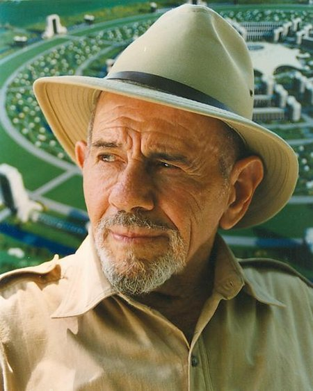

Jacque Fresco

Jacque Fresco, the founder of The Venus Project.
Jacque Fresco was an American futurist and self-described social engineer. He was a proponent of the idea of a resource-based economy and founded The Venus Project.
The Venus Project is an organization that proposes a feasible plan of action for social change, working towards a peaceful and sustainable global civilization.
Fresco's work spans many areas including city design, industrial design, and engineering, all with the aim of improving society and the environment.